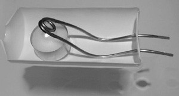
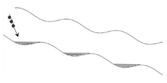

IYPT 2007 Problems
Problems for the 20th IYPT 2007
1. Filament
There is a significant current surge when a filament lamp is first switched on. Propose a theoretical model and investigate it experimentally.
2. Slinky
Suspend a Slinky vertically and let it fall freely. Investigate the characteristics of the Slinky’s free-fall motion.
3. Water jets
What can be observed when two water jets collide at different angles?
4. Spring thread
Pull a thread through the button holes as shown in the picture. The button can be put into rotating motion by pulling the thread. One can feel some elasticity of the thread. Explain the elastic properties of such a system.
5. Razor blade
A razor blade is placed gently on a water surface. A charged body brought near the razor makes it move away. Describe the motion of the razor if an external electric field is applied.
6. Rheology
It has been said that if you are sinking in soft mud, you should not move vigourously to try to get out. Make a model of the phenomenon and study its properties.
7. Crickets
Some insects, such as crickets, produce a rather impressive sound by rubbing together two parts of their body. Investigate this phenomenon. Build a device producing a sound in a similar way.
8. Condensation
Water droplets form on a glass filled with cold water. Explain the phenomenon and investigate the parameters that determine the size and number of droplets on the glass.
9. Ink droplet
Place a droplet of ball pen ink on a water surface. The droplet begins to move. Explain the phenomenon.
10. Steam boat
A boat can be propelled by means of a candle and metal tubing with two open ends (an example is shown in the picture). Explain how such a boat is propelled and optimize your design for maximum velocity.

11. Water Ski
What is the minimum speed needed to pull an object attached to a rope over a water surface so that is does not sink. Investigate the relevant parameters experimentally and theoretically.
12. Fluid lens
Develop a fluid lens system with adjustable focus. Investigate the quality and possible applications of your system.
13. Balloon
Measure the change of the optical properties of the skin of a balloon during its inflation.
14. Earthquake
Suggest a mechanism that makes buildings resistant to earthquakes. Perform experiments and explain the results.
15. Blowpipe
Investigate the motion of a projectile inside a blowpipe. Determine the conditions for maximum exit velocity when blown by mouth.
16. Water Cascade
Arrange a corrugated drainage pipe, or similar, on an incline. Allow water to flow through the pipe and then carefully stop the flow. Investigate the behaviour of the system when water is dropped into the pipe.

17. Ice Bulge
Fill a plastic tray with water. When frozen, under certain conditions, a bulge can appear on the surface. Investigate this phenomenon.